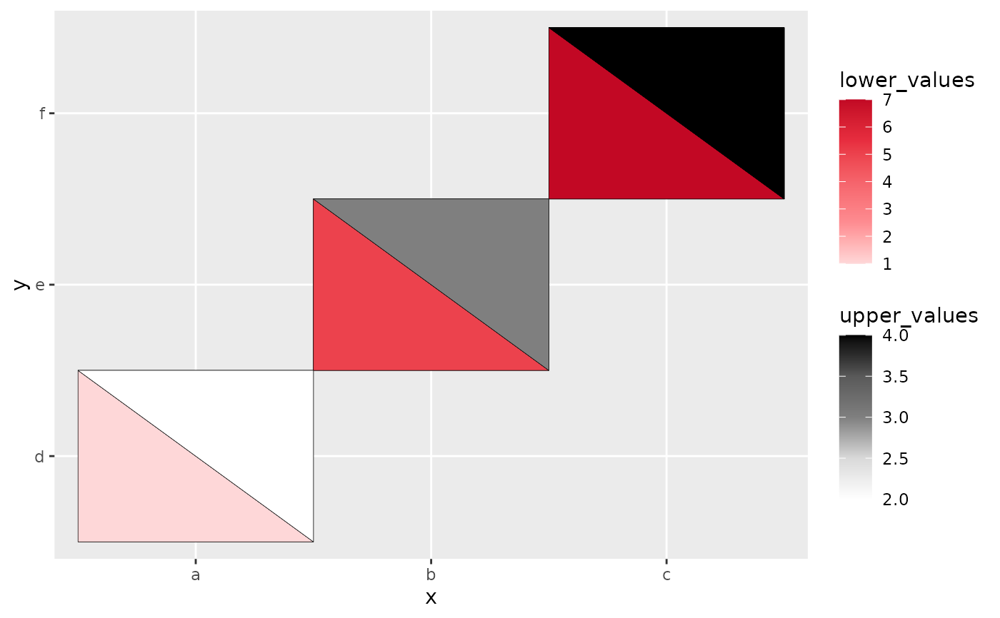
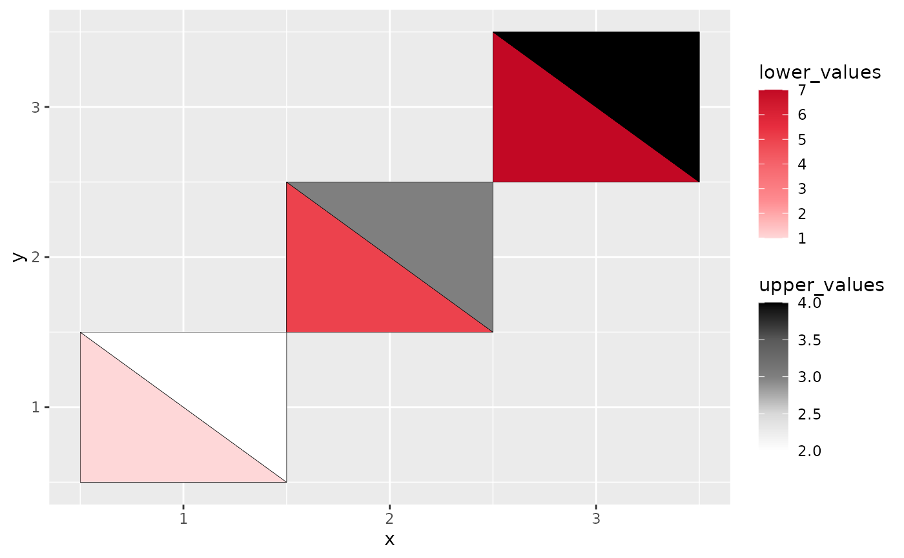

The heattriangle geom is used to create the two triangles split by a diagonal line of a rectangle that use luminance to show the values from two sources on the same plot.
Arguments
- lower
The column name for the lower portion of heattriangle.
- lower_name
The label name (in quotes) for the legend of the lower rendering. Default is
NULL.- lower_colors
A color vector, usually as hex codes.
- upper
The column name for the upper portion of heattriangle.
- upper_name
The label name (in quotes) for the legend of the upper rendering. Default is
NULL.- upper_colors
A color vector, usually as hex codes.
- ...
...accepts any argumentsscale_fill_gradientn()has .
Examples
# heattriangle with categorical variables only
library(ggplot2)
data <- data.frame(x = rep(c("a", "b", "c"), 3),
y = rep(c("d", "e", "f"), 3),
lower_values = rep(c(1,5,7),3),
upper_values = rep(c(2,3,4),3))
ggplot(data, aes(x,y)) +
geom_heat_tri(lower = lower_values, upper = upper_values)

# heatcircle with numeric variables only
data <- data.frame(x = rep(c(1, 2, 3), 3),
y = rep(c(1, 2, 3), 3),
lower_values = rep(c(1,5,7),3),
upper_values = rep(c(2,3,4),3))
ggplot(data, aes(x,y)) +
geom_heat_tri(lower = lower_values, upper = upper_values)

# heatcircle with a mixture of numeric and categorical variables
data <- data.frame(x = rep(c("a", "b", "c"), 3),
y = rep(c(1, 2, 3), 3),
lower_values = rep(c(1,5,7),3),
upper_values = rep(c(2,3,4),3))
ggplot(data, aes(x,y)) +
geom_heat_tri(lower = lower_values, upper = upper_values)